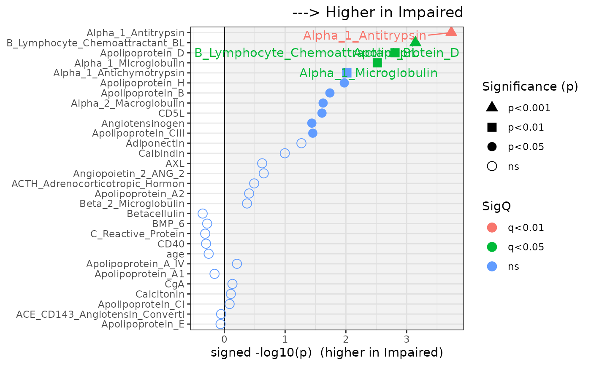

Plot & Summarize Group Stats via MakeComparisonTable (BH q from p; SHAPE by p; COLOR by Category (vector or data frame); stable point size; palette via paletteer)
Source:R/Plot2GroupStats.R
Plot2GroupStats.RdPlot & Summarize Group Stats via MakeComparisonTable (BH q from p; SHAPE by p; COLOR by Category (vector or data frame); stable point size; palette via paletteer)
Usage
Plot2GroupStats(
data,
variables,
VariableCategories = NULL,
impClust,
normalClust,
group_var,
missing_threshold = 0.8,
max_levels = 10,
label_q = 0.05,
x_axis = c("signed_logp", "signed_effect", "effect", "logp"),
sort_by = c("q", "p", "effect", "signed_logp", "signed_effect", "none"),
mct_args = list(),
palette = "pals::alphabet",
point_size = 3.5,
Data = lifecycle::deprecated(),
Variables = lifecycle::deprecated(),
GroupVar = lifecycle::deprecated()
)Arguments
- data
data.frame
- variables
character vector of variables to analyze
- VariableCategories
optional:
data frame with columns Variable, Category; OR
vector of categories (named by variable OR unnamed aligned to
Variables)
- impClust, normalClust
labels for the two groups (impClust plotted to the RIGHT for signed axes)
- group_var
column name in
Dataholding the group labels- missing_threshold
drop vars with > this fraction missing (default 0.80)
- max_levels
drop factors with > this many levels (default 10)
- label_q
label threshold using q (default 0.05)
- x_axis
one of c("signed_logp","signed_effect","effect","logp")
- sort_by
one of c("q","p","effect","signed_logp","signed_effect","none")
- mct_args
list of extra args to SciDataReportR::MakeComparisonTable(); e.g., AddEffectSize=TRUE
- palette
paletteer palette string for category colors (default "pals::alphabet")
- point_size
numeric constant for point size (default 3.5)
- Data
Deprecated (since 19.15.0). Use
datainstead.- Variables
Deprecated (since 19.15.0). Use
variablesinstead.- GroupVar
Deprecated (since 19.15.0). Use
group_varinstead.
Examples
# \donttest{
data(SampleData)
data(SampleVariableTypes)
# Attach labels and factor levels for readable output
Labelled <- RevalueData(SampleData, SampleVariableTypes)$RevaluedData
# Compare 30 analytes between Diagnosis groups
vars <- c(
"age", "ACE_CD143_Angiotensin_Converti", "ACTH_Adrenocorticotropic_Hormon",
"AXL", "Adiponectin", "Alpha_1_Antichymotrypsin", "Alpha_1_Antitrypsin",
"Alpha_1_Microglobulin", "Alpha_2_Macroglobulin", "Angiopoietin_2_ANG_2",
"Angiotensinogen", "Apolipoprotein_A_IV", "Apolipoprotein_A1",
"Apolipoprotein_A2", "Apolipoprotein_B", "Apolipoprotein_CI",
"Apolipoprotein_CIII", "Apolipoprotein_D", "Apolipoprotein_E",
"Apolipoprotein_H", "B_Lymphocyte_Chemoattractant_BL", "BMP_6",
"Beta_2_Microglobulin", "Betacellulin", "C_Reactive_Protein", "CD40",
"CD5L", "Calbindin", "Calcitonin", "CgA"
)
result <- Plot2GroupStats(
Labelled,
variables = vars,
group_var = "Diagnosis",
impClust = "Impaired",
normalClust = "Control"
)
# Display the group-comparison plot
result$plot

# }